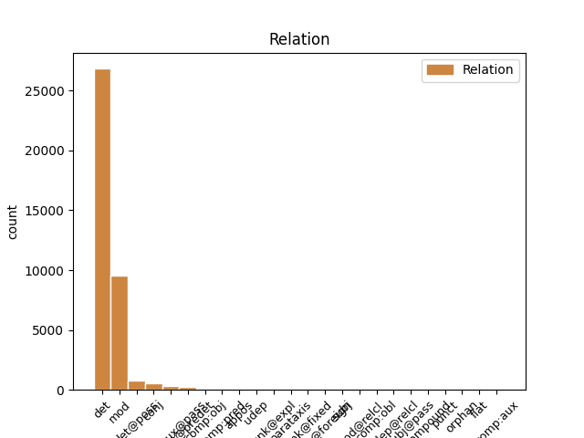
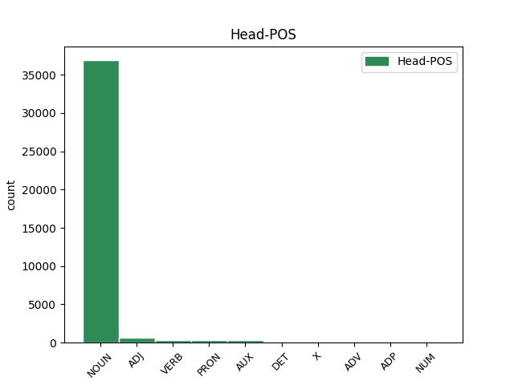
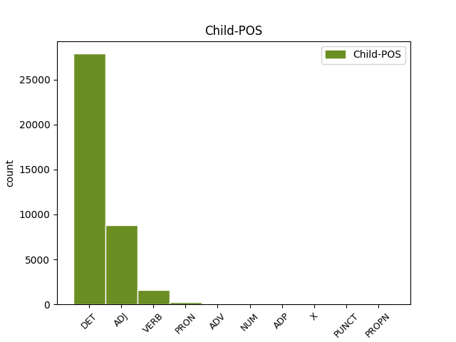

Distribution of features within this leaf



Agreement Rules sorted by frequency.
When the dependent token is None
1 sono _ _ _ _ 0 _ _ _
2 promotori _ _ _ _ 0 _ _ _
3 di _ _ _ _ 0 _ _ _
4 l' il DET RD Definite=Def|Gender=Fem|Number=Sing|PronType=Art 5 det _ _
5 iniziativa iniziativa NOUN S Gender=Fem|Number=Sing 0 _ _ _
6 Patrizia _ _ _ _ 0 _ _ _
7 Cavalli _ _ _ _ 0 _ _ _
8 , _ _ _ _ 0 _ _ _
9 Carlo _ _ _ _ 0 _ _ _
10 Cecchi _ _ _ _ 0 _ _ _
11 , _ _ _ _ 0 _ _ _
12 Alfonso _ _ _ _ 0 _ _ _
13 Berardinelli _ _ _ _ 0 _ _ _
14 , _ _ _ _ 0 _ _ _
15 Cesare _ _ _ _ 0 _ _ _
16 Garboli _ _ _ _ 0 _ _ _
17 , _ _ _ _ 0 _ _ _
18 Piergiorgio _ _ _ _ 0 _ _ _
19 Bellocchio _ _ _ _ 0 _ _ _
20 , _ _ _ _ 0 _ _ _
21 Gianfranco _ _ _ _ 0 _ _ _
22 Bettin _ _ _ _ 0 _ _ _
23 , _ _ _ _ 0 _ _ _
24 Grazia _ _ _ _ 0 _ _ _
25 Cherchi _ _ _ _ 0 _ _ _
26 , _ _ _ _ 0 _ _ _
27 Giorgio _ _ _ _ 0 _ _ _
28 Agamben _ _ _ _ 0 _ _ _
29 , _ _ _ _ 0 _ _ _
30 Goffredo _ _ _ _ 0 _ _ _
31 Fofi _ _ _ _ 0 _ _ _
32 e _ _ _ _ 0 _ _ _
33 Fabrizia _ _ _ _ 0 _ _ _
34 Ramondino _ _ _ _ 0 _ _ _
35 . _ _ _ _ 0 _ _ _
When the dependent token is None
1 Questo _ _ _ _ 0 _ _ _
2 Premio _ _ _ _ 0 _ _ _
3 che _ _ _ _ 0 _ _ _
4 non _ _ _ _ 0 _ _ _
5 avrà _ _ _ _ 0 _ _ _
6 sede sede NOUN S Gender=Fem|Number=Sing 0 _ _ _
7 fissa fisso ADJ A Gender=Fem|Number=Sing 6 mod _ _
8 né _ _ _ _ 0 _ _ _
9 statuto _ _ _ _ 0 _ _ _
10 né _ _ _ _ 0 _ _ _
11 bando _ _ _ _ 0 _ _ _
12 di _ _ _ _ 0 _ _ _
13 concorso _ _ _ _ 0 _ _ _
14 sarà _ _ _ _ 0 _ _ _
15 dotato _ _ _ _ 0 _ _ _
16 di _ _ _ _ 0 _ _ _
17 una _ _ _ _ 0 _ _ _
18 somma _ _ _ _ 0 _ _ _
19 di _ _ _ _ 0 _ _ _
20 denaro _ _ _ _ 0 _ _ _
21 con _ _ _ _ 0 _ _ _
22 la _ _ _ _ 0 _ _ _
23 quale _ _ _ _ 0 _ _ _
24 un _ _ _ _ 0 _ _ _
25 gruppo _ _ _ _ 0 _ _ _
26 di _ _ _ _ 0 _ _ _
27 amici _ _ _ _ 0 _ _ _
28 accoglierà _ _ _ _ 0 _ _ _
29 un' _ _ _ _ 0 _ _ _
30 opera _ _ _ _ 0 _ _ _
31 o _ _ _ _ 0 _ _ _
32 un _ _ _ _ 0 _ _ _
33 gesto _ _ _ _ 0 _ _ _
34 o _ _ _ _ 0 _ _ _
35 un _ _ _ _ 0 _ _ _
36 evento _ _ _ _ 0 _ _ _
37 di _ _ _ _ 0 _ _ _
38 cultura _ _ _ _ 0 _ _ _
39 che _ _ _ _ 0 _ _ _
40 Elsa _ _ _ _ 0 _ _ _
41 Morante _ _ _ _ 0 _ _ _
42 avrebbe _ _ _ _ 0 _ _ _
43 apprezzato _ _ _ _ 0 _ _ _
44 . _ _ _ _ 0 _ _ _
When the dependent token is None
1 Da _ _ _ _ 0 _ _ _
2 là _ _ _ _ 0 _ _ _
3 , _ _ _ _ 0 _ _ _
4 i _ _ _ _ 0 _ _ _
5 gialli _ _ _ _ 0 _ _ _
6 treni _ _ _ _ 0 _ _ _
7 ci _ _ _ _ 0 _ _ _
8 porteranno _ _ _ _ 0 _ _ _
9 a _ _ _ _ 0 _ _ _
10 i _ _ _ _ 0 _ _ _
11 quartieri _ _ _ _ 0 _ _ _
12 di _ _ _ _ 0 _ _ _
13 l' _ _ _ _ 0 _ _ _
14 Est _ _ _ _ 0 _ _ _
15 risanati _ _ _ _ 0 _ _ _
16 fino _ _ _ _ 0 _ _ _
17 a _ _ _ _ 0 _ _ _
18 le _ _ _ _ 0 _ _ _
19 vecchie _ _ _ _ 0 _ _ _
20 zone _ _ _ _ 0 _ _ _
21 di _ _ _ _ 0 _ _ _
22 palazzine _ _ _ _ 0 _ _ _
23 liberty _ _ _ _ 0 _ _ _
24 o _ _ _ _ 0 _ _ _
25 Jugendstihl _ _ _ _ 0 _ _ _
26 rese _ _ _ _ 0 _ _ _
27 vivacemente _ _ _ _ 0 _ _ _
28 " _ _ _ _ 0 _ _ _
29 Multikulti _ _ _ _ 0 _ _ _
30 " _ _ _ _ 0 _ _ _
31 , _ _ _ _ 0 _ _ _
32 multiculturali _ _ _ _ 0 _ _ _
33 , _ _ _ _ 0 _ _ _
34 grazie _ _ _ _ 0 _ _ _
35 a _ _ _ _ 0 _ _ _
36 ristorazione _ _ _ _ 0 _ _ _
37 e _ _ _ _ 0 _ _ _
38 negozi negozio NOUN S Gender=Masc|Number=Plur 0 _ _ _
39 creati creare VERB V Gender=Masc|Number=Plur|Tense=Past|VerbForm=Part 38 mod _ _
40 da _ _ _ _ 0 _ _ _
41 la _ _ _ _ 0 _ _ _
42 fantasia _ _ _ _ 0 _ _ _
43 di _ _ _ _ 0 _ _ _
44 il _ _ _ _ 0 _ _ _
45 nuovo _ _ _ _ 0 _ _ _
46 ceto _ _ _ _ 0 _ _ _
47 medio _ _ _ _ 0 _ _ _
48 turco _ _ _ _ 0 _ _ _
49 . _ _ _ _ 0 _ _ _
When the dependent token is None
1 Lo _ _ _ _ 0 _ _ _
2 stesso stesso PRON PD Gender=Masc|Number=Sing|PronType=Dem 4 comp:obj _ _
3 avevano _ _ _ _ 0 _ _ _
4 fatto fare VERB V Gender=Masc|Number=Sing|Tense=Past|VerbForm=Part 0 _ _ _
5 le _ _ _ _ 0 _ _ _
6 compagnie _ _ _ _ 0 _ _ _
7 petrolifere _ _ _ _ 0 _ _ _
8 : _ _ _ _ 0 _ _ _
9 " _ _ _ _ 0 _ _ _
10 poi _ _ _ _ 0 _ _ _
11 è _ _ _ _ 0 _ _ _
12 bastato _ _ _ _ 0 _ _ _
13 dir _ _ _ _ 0 _ _ _
14 glie _ _ _ _ 0 _ _ _
15 lo _ _ _ _ 0 _ _ _
16 e _ _ _ _ 0 _ _ _
17 allora _ _ _ _ 0 _ _ _
18 il _ _ _ _ 0 _ _ _
19 prezzo _ _ _ _ 0 _ _ _
20 di _ _ _ _ 0 _ _ _
21 la _ _ _ _ 0 _ _ _
22 benzina _ _ _ _ 0 _ _ _
23 è _ _ _ _ 0 _ _ _
24 calato _ _ _ _ 0 _ _ _
25 di _ _ _ _ 0 _ _ _
26 30 _ _ _ _ 0 _ _ _
27 lire _ _ _ _ 0 _ _ _
28 " _ _ _ _ 0 _ _ _
29 . _ _ _ _ 0 _ _ _
When the dependent token is None
1 Zitto _ _ _ _ 0 _ _ _
2 zitto _ _ _ _ 0 _ _ _
3 , _ _ _ _ 0 _ _ _
4 quatto _ _ _ _ 0 _ _ _
5 quatto _ _ _ _ 0 _ _ _
6 , _ _ _ _ 0 _ _ _
7 il _ _ _ _ 0 _ _ _
8 sostituto _ _ _ _ 0 _ _ _
9 procuratore _ _ _ _ 0 _ _ _
10 Fabio _ _ _ _ 0 _ _ _
11 Salamone _ _ _ _ 0 _ _ _
12 ha _ _ _ _ 0 _ _ _
13 interrogato _ _ _ _ 0 _ _ _
14 dunque _ _ _ _ 0 _ _ _
15 non _ _ _ _ 0 _ _ _
16 una uno NUM N Gender=Fem|Number=Sing|NumType=Card 20 mod _ SpaceAfter=No
17 , _ _ _ _ 0 _ _ _
18 ma _ _ _ _ 0 _ _ _
19 due _ _ _ _ 0 _ _ _
20 volte volta NOUN S Gender=Fem|Number=Plur 0 _ _ _
21 l' _ _ _ _ 0 _ _ _
22 ex _ _ _ _ 0 _ _ _
23 collega _ _ _ _ 0 _ _ _
24 . _ _ _ _ 0 _ _ _
When the dependent token is None
1 Anche _ _ _ _ 0 _ _ _
2 perché _ _ _ _ 0 _ _ _
3 il _ _ _ _ 0 _ _ _
4 conflitto _ _ _ _ 0 _ _ _
5 , _ _ _ _ 0 _ _ _
6 benché _ _ _ _ 0 _ _ _
7 vivissimo _ _ _ _ 0 _ _ _
8 , _ _ _ _ 0 _ _ _
9 si _ _ _ _ 0 _ _ _
10 svolge _ _ _ _ 0 _ _ _
11 per _ _ _ _ 0 _ _ _
12 vie _ _ _ _ 0 _ _ _
13 solamente sola ADV B Gender=Fem 14 mod _ _
14 diplomatiche diplomatico ADJ A Gender=Fem|Number=Plur 0 _ _ _
15 . _ _ _ _ 0 _ _ _
When the dependent token is None
1 Durante _ _ _ _ 0 _ _ _
2 il _ _ _ _ 0 _ _ _
3 suo _ _ _ _ 0 _ _ _
4 intervento _ _ _ _ 0 _ _ _
5 davanti _ _ _ _ 0 _ _ _
6 a _ _ _ _ 0 _ _ _
7 una _ _ _ _ 0 _ _ _
8 platea _ _ _ _ 0 _ _ _
9 di _ _ _ _ 0 _ _ _
10 dirigenti _ _ _ _ 0 _ _ _
11 e _ _ _ _ 0 _ _ _
12 delegati _ _ _ _ 0 _ _ _
13 Cisl _ _ _ _ 0 _ _ _
14 , _ _ _ _ 0 _ _ _
15 D' _ _ _ _ 0 _ _ _
16 Antoni _ _ _ _ 0 _ _ _
17 ha _ _ _ _ 0 _ _ _
18 lanciato _ _ _ _ 0 _ _ _
19 anche _ _ _ _ 0 _ _ _
20 una _ _ _ _ 0 _ _ _
21 proposta _ _ _ _ 0 _ _ _
22 a _ _ _ _ 0 _ _ _
23 favore _ _ _ _ 0 _ _ _
24 di _ _ _ _ 0 _ _ _
25 il _ _ _ _ 0 _ _ _
26 l' il ADP EA Gender=Masc|Number=Sing 27 udep@relcl _ SpaceAfter=No
27 reddito reddito NOUN S Gender=Masc|Number=Sing 0 _ _ _
28 familiare _ _ _ _ 0 _ _ _
29 , _ _ _ _ 0 _ _ _
30 proposta _ _ _ _ 0 _ _ _
31 contenuta _ _ _ _ 0 _ _ _
32 anche _ _ _ _ 0 _ _ _
33 in _ _ _ _ 0 _ _ _
34 una _ _ _ _ 0 _ _ _
35 lettera _ _ _ _ 0 _ _ _
36 che _ _ _ _ 0 _ _ _
37 D' _ _ _ _ 0 _ _ _
38 Antoni _ _ _ _ 0 _ _ _
39 ha _ _ _ _ 0 _ _ _
40 inviato _ _ _ _ 0 _ _ _
41 a _ _ _ _ 0 _ _ _
42 il _ _ _ _ 0 _ _ _
43 presidente _ _ _ _ 0 _ _ _
44 di _ _ _ _ 0 _ _ _
45 il _ _ _ _ 0 _ _ _
46 consiglio _ _ _ _ 0 _ _ _
47 , _ _ _ _ 0 _ _ _
48 Lamberto _ _ _ _ 0 _ _ _
49 Dini _ _ _ _ 0 _ _ _
50 . _ _ _ _ 0 _ _ _
When the dependent token is None
1 " _ _ _ _ 0 _ _ _
2 senza _ _ _ _ 0 _ _ _
3 par par X SW Foreign=Yes|Gender=Masc|Number=Sing 0 _ _ _
4 condicio condicio X SW Foreign=Yes|Gender=Masc|Number=Sing 3 flat@foreign _ _
5 niente _ _ _ _ 0 _ _ _
6 elezioni _ _ _ _ 0 _ _ _
7 " _ _ _ _ 0 _ _ _
8 . _ _ _ _ 0 _ _ _
When the dependent token is None
1 il _ _ _ _ 0 _ _ _
2 progetto _ _ _ _ 0 _ _ _
3 Euralille _ _ _ _ 0 _ _ _
4 sta _ _ _ _ 0 _ _ _
5 rivitalizzando _ _ _ _ 0 _ _ _
6 un' _ _ _ _ 0 _ _ _
7 area _ _ _ _ 0 _ _ _
8 in _ _ _ _ 0 _ _ _
9 forte _ _ _ _ 0 _ _ _
10 declino _ _ _ _ 0 _ _ _
11 industriale _ _ _ _ 0 _ _ _
12 ; _ _ _ _ 0 _ _ _
13 la _ _ _ _ 0 _ _ _
14 dotazione _ _ _ _ 0 _ _ _
15 di _ _ _ _ 0 _ _ _
16 un _ _ _ _ 0 _ _ _
17 importante _ _ _ _ 0 _ _ _
18 sistema _ _ _ _ 0 _ _ _
19 di _ _ _ _ 0 _ _ _
20 infrastrutture _ _ _ _ 0 _ _ _
21 è _ _ _ _ 0 _ _ _
22 il _ _ _ _ 0 _ _ _
23 punto _ _ _ _ 0 _ _ _
24 di _ _ _ _ 0 _ _ _
25 forza _ _ _ _ 0 _ _ _
26 per _ _ _ _ 0 _ _ _
27 lo _ _ _ _ 0 _ _ _
28 sviluppo _ _ _ _ 0 _ _ _
29 di _ _ _ _ 0 _ _ _
30 le _ _ _ _ 0 _ _ _
31 città _ _ _ _ 0 _ _ _
32 di _ _ _ _ 0 _ _ _
33 l' _ _ _ _ 0 _ _ _
34 innovazione _ _ _ _ 0 _ _ _
35 di _ _ _ _ 0 _ _ _
36 la _ _ _ _ 0 _ _ _
37 regione regione NOUN S Gender=Fem|Number=Sing 0 _ _ _
38 PACA PACA PROPN SP Gender=Fem 37 mod _ _
39 ( _ _ _ _ 0 _ _ _
40 Provence _ _ _ _ 0 _ _ _
41 , _ _ _ _ 0 _ _ _
42 Alpes _ _ _ _ 0 _ _ _
43 , _ _ _ _ 0 _ _ _
44 Còte _ _ _ _ 0 _ _ _
45 D' _ _ _ _ 0 _ _ _
46 Azur _ _ _ _ 0 _ _ _
47 ) _ _ _ _ 0 _ _ _
48 di _ _ _ _ 0 _ _ _
49 cui _ _ _ _ 0 _ _ _
50 Marsiglia _ _ _ _ 0 _ _ _
51 , _ _ _ _ 0 _ _ _
52 Nizza _ _ _ _ 0 _ _ _
53 , _ _ _ _ 0 _ _ _
54 Tolone _ _ _ _ 0 _ _ _
55 e _ _ _ _ 0 _ _ _
56 Avignone _ _ _ _ 0 _ _ _
57 sono _ _ _ _ 0 _ _ _
58 i _ _ _ _ 0 _ _ _
59 poli _ _ _ _ 0 _ _ _
60 di _ _ _ _ 0 _ _ _
61 maggior _ _ _ _ 0 _ _ _
62 rilievo _ _ _ _ 0 _ _ _
63 . _ _ _ _ 0 _ _ _
When the dependent token is None
1 Le _ _ _ _ 0 _ _ _
2 magliette _ _ _ _ 0 _ _ _
3 con _ _ _ _ 0 _ _ _
4 la _ _ _ _ 0 _ _ _
5 scritta _ _ _ _ 0 _ _ _
6 " _ _ _ _ 0 _ _ _
7 no _ _ _ _ 0 _ _ _
8 a _ _ _ _ 0 _ _ _
9 il _ _ _ _ 0 _ _ _
10 nucleare _ _ _ _ 0 _ _ _
11 " _ _ _ _ 0 _ _ _
12 vanno _ _ _ _ 0 _ _ _
13 a _ _ _ _ 0 _ _ _
14 ruba _ _ _ _ 0 _ _ _
15 , _ _ _ _ 0 _ _ _
16 ricompaiono _ _ _ _ 0 _ _ _
17 , _ _ _ _ 0 _ _ _
18 da _ _ _ _ 0 _ _ _
19 chissà _ _ _ _ 0 _ _ _
20 dove _ _ _ _ 0 _ _ _
21 , _ _ _ _ 0 _ _ _
22 quelle _ _ _ _ 0 _ _ _
23 con _ _ _ _ 0 _ _ _
24 il _ _ _ _ 0 _ _ _
25 sole _ _ _ _ 0 _ _ _
26 che _ _ _ _ 0 _ _ _
27 dicono _ _ _ _ 0 _ _ _
28 " _ _ _ _ 0 _ _ _
29 nucleare _ _ _ _ 0 _ _ _
30 , _ _ _ _ 0 _ _ _
31 no _ _ _ _ 0 _ _ _
32 grazie _ _ _ _ 0 _ _ _
33 " _ _ _ _ 0 _ _ _
34 , _ _ _ _ 0 _ _ _
35 le il PUNCT FF Gender=Fem|Number=Plur 36 punct _ _
36 spillette spilla NOUN S Gender=Fem|Number=Plur 0 _ _ _
37 , _ _ _ _ 0 _ _ _
38 i _ _ _ _ 0 _ _ _
39 " _ _ _ _ 0 _ _ _
40 no _ _ _ _ 0 _ _ _
41 Nukes _ _ _ _ 0 _ _ _
42 " _ _ _ _ 0 _ _ _
43 adesivi _ _ _ _ 0 _ _ _
44 . _ _ _ _ 0 _ _ _
Disagree Examples:
1 Quest' _ _ _ _ 0 _ _ _
2 ultimo _ _ _ _ 0 _ _ _
3 è _ _ _ _ 0 _ _ _
4 funzione _ _ _ _ 0 _ _ _
5 di _ _ _ _ 0 _ _ _
6 variabili _ _ _ _ 0 _ _ _
7 strutturali _ _ _ _ 0 _ _ _
8 tra _ _ _ _ 0 _ _ _
9 cui _ _ _ _ 0 _ _ _
10 le _ _ _ _ 0 _ _ _
11 istituzioni _ _ _ _ 0 _ _ _
12 , _ _ _ _ 0 _ _ _
13 i _ _ _ _ 0 _ _ _
14 settori _ _ _ _ 0 _ _ _
15 produttivi _ _ _ _ 0 _ _ _
16 , _ _ _ _ 0 _ _ _
17 il _ _ _ _ 0 _ _ _
18 mix _ _ _ _ 0 _ _ _
19 pubblico _ _ _ _ 0 _ _ _
20 privato _ _ _ _ 0 _ _ _
21 , _ _ _ _ 0 _ _ _
22 le _ _ _ _ 0 _ _ _
23 risorse _ _ _ _ 0 _ _ _
24 umane _ _ _ _ 0 _ _ _
25 e _ _ _ _ 0 _ _ _
26 naturali _ _ _ _ 0 _ _ _
27 , _ _ _ _ 0 _ _ _
28 le _ _ _ _ 0 _ _ _
29 infrastrutture _ _ _ _ 0 _ _ _
30 , _ _ _ _ 0 _ _ _
31 le _ _ _ _ 0 _ _ _
32 radici _ _ _ _ 0 _ _ _
33 culturali _ _ _ _ 0 _ _ _
34 che _ _ _ _ 0 _ _ _
35 si _ _ _ _ 0 _ _ _
36 modificano _ _ _ _ 0 _ _ _
37 in _ _ _ _ 0 _ _ _
38 genere _ _ _ _ 0 _ _ _
39 attraverso _ _ _ _ 0 _ _ _
40 processi _ _ _ _ 0 _ _ _
41 di _ _ _ _ 0 _ _ _
42 lungo _ _ _ _ 0 _ _ _
43 periodo _ _ _ _ 0 _ _ _
44 , _ _ _ _ 0 _ _ _
45 ma _ _ _ _ 0 _ _ _
46 che _ _ _ _ 0 _ _ _
47 recentemente _ _ _ _ 0 _ _ _
48 hanno _ _ _ _ 0 _ _ _
49 mostrato _ _ _ _ 0 _ _ _
50 una _ _ _ _ 0 _ _ _
51 forte _ _ _ _ 0 _ _ _
52 accelerazione _ _ _ _ 0 _ _ _
53 , _ _ _ _ 0 _ _ _
54 incalzati _ _ _ _ 0 _ _ _
55 da _ _ _ _ 0 _ _ _
56 eventi _ _ _ _ 0 _ _ _
57 imprevedibili _ _ _ _ 0 _ _ _
58 quali _ _ _ _ 0 _ _ _
59 la il DET RD Definite=Def|Gender=Fem|Number=Sing|PronType=Art 60 det _ _
60 fine fine NOUN S Gender=Masc|Number=Sing 0 _ _ _
61 di _ _ _ _ 0 _ _ _
62 la _ _ _ _ 0 _ _ _
63 guerra _ _ _ _ 0 _ _ _
64 fredda _ _ _ _ 0 _ _ _
65 , _ _ _ _ 0 _ _ _
66 a _ _ _ _ 0 _ _ _
67 livello _ _ _ _ 0 _ _ _
68 mondiale _ _ _ _ 0 _ _ _
69 , _ _ _ _ 0 _ _ _
70 e _ _ _ _ 0 _ _ _
71 l' _ _ _ _ 0 _ _ _
72 avviato _ _ _ _ 0 _ _ _
73 processo _ _ _ _ 0 _ _ _
74 di _ _ _ _ 0 _ _ _
75 trasformazione _ _ _ _ 0 _ _ _
76 di _ _ _ _ 0 _ _ _
77 le _ _ _ _ 0 _ _ _
78 istituzioni _ _ _ _ 0 _ _ _
79 , _ _ _ _ 0 _ _ _
80 in _ _ _ _ 0 _ _ _
81 Italia _ _ _ _ 0 _ _ _
82 . _ _ _ _ 0 _ _ _
1 Le _ _ _ _ 0 _ _ _
2 esperienze _ _ _ _ 0 _ _ _
3 di _ _ _ _ 0 _ _ _
4 le _ _ _ _ 0 _ _ _
5 città _ _ _ _ 0 _ _ _
6 estere _ _ _ _ 0 _ _ _
7 ribadiscono _ _ _ _ 0 _ _ _
8 l' _ _ _ _ 0 _ _ _
9 importanza _ _ _ _ 0 _ _ _
10 di _ _ _ _ 0 _ _ _
11 le _ _ _ _ 0 _ _ _
12 infrastrutture _ _ _ _ 0 _ _ _
13 in _ _ _ _ 0 _ _ _
14 il _ _ _ _ 0 _ _ _
15 creare _ _ _ _ 0 _ _ _
16 in _ _ _ _ 0 _ _ _
17 un' _ _ _ _ 0 _ _ _
18 area _ _ _ _ 0 _ _ _
19 ( _ _ _ _ 0 _ _ _
20 urbana _ _ _ _ 0 _ _ _
21 e _ _ _ _ 0 _ _ _
22 non _ _ _ _ 0 _ _ _
23 ) _ _ _ _ 0 _ _ _
24 l' _ _ _ _ 0 _ _ _
25 ambiente ambiente NOUN S Gender=Masc|Number=Sing 0 _ _ _
26 migliore migliore ADJ A Degree=Cmp|Gender=Fem|Number=Plur 25 mod _ _
27 per _ _ _ _ 0 _ _ _
28 lo _ _ _ _ 0 _ _ _
29 sviluppo _ _ _ _ 0 _ _ _
30 di _ _ _ _ 0 _ _ _
31 attività _ _ _ _ 0 _ _ _
32 economiche _ _ _ _ 0 _ _ _
33 innovative _ _ _ _ 0 _ _ _
34 , _ _ _ _ 0 _ _ _
35 per _ _ _ _ 0 _ _ _
36 la _ _ _ _ 0 _ _ _
37 rivitalizzazione _ _ _ _ 0 _ _ _
38 economica _ _ _ _ 0 _ _ _
39 di _ _ _ _ 0 _ _ _
40 aree _ _ _ _ 0 _ _ _
41 in _ _ _ _ 0 _ _ _
42 declino _ _ _ _ 0 _ _ _
43 , _ _ _ _ 0 _ _ _
44 per _ _ _ _ 0 _ _ _
45 il _ _ _ _ 0 _ _ _
46 mantenimento _ _ _ _ 0 _ _ _
47 di _ _ _ _ 0 _ _ _
48 tessuti _ _ _ _ 0 _ _ _
49 produttivi _ _ _ _ 0 _ _ _
50 già _ _ _ _ 0 _ _ _
51 consolidati _ _ _ _ 0 _ _ _
52 . _ _ _ _ 0 _ _ _
1 Su _ _ _ _ 0 _ _ _
2 il _ _ _ _ 0 _ _ _
3 piano _ _ _ _ 0 _ _ _
4 macroeconomico _ _ _ _ 0 _ _ _
5 , _ _ _ _ 0 _ _ _
6 dunque _ _ _ _ 0 _ _ _
7 , _ _ _ _ 0 _ _ _
8 le _ _ _ _ 0 _ _ _
9 infrastrutture _ _ _ _ 0 _ _ _
10 si _ _ _ _ 0 _ _ _
11 delineano _ _ _ _ 0 _ _ _
12 come _ _ _ _ 0 _ _ _
13 un _ _ _ _ 0 _ _ _
14 vantaggio _ _ _ _ 0 _ _ _
15 competitivo _ _ _ _ 0 _ _ _
16 offerto _ _ _ _ 0 _ _ _
17 da _ _ _ _ 0 _ _ _
18 una _ _ _ _ 0 _ _ _
19 città _ _ _ _ 0 _ _ _
20 rispetto _ _ _ _ 0 _ _ _
21 ad _ _ _ _ 0 _ _ _
22 altre _ _ _ _ 0 _ _ _
23 , _ _ _ _ 0 _ _ _
24 non _ _ _ _ 0 _ _ _
25 solo _ _ _ _ 0 _ _ _
26 in _ _ _ _ 0 _ _ _
27 stretti _ _ _ _ 0 _ _ _
28 termini _ _ _ _ 0 _ _ _
29 di _ _ _ _ 0 _ _ _
30 economie _ _ _ _ 0 _ _ _
31 esterne _ _ _ _ 0 _ _ _
32 fruibili _ _ _ _ 0 _ _ _
33 da _ _ _ _ 0 _ _ _
34 le _ _ _ _ 0 _ _ _
35 attività _ _ _ _ 0 _ _ _
36 produttive _ _ _ _ 0 _ _ _
37 , _ _ _ _ 0 _ _ _
38 ma _ _ _ _ 0 _ _ _
39 anche _ _ _ _ 0 _ _ _
40 in _ _ _ _ 0 _ _ _
41 termini _ _ _ _ 0 _ _ _
42 di _ _ _ _ 0 _ _ _
43 determinanti _ _ _ _ 0 _ _ _
44 di _ _ _ _ 0 _ _ _
45 l' _ _ _ _ 0 _ _ _
46 ambiente _ _ _ _ 0 _ _ _
47 socio _ _ _ _ 0 _ _ _
48 economico _ _ _ _ 0 _ _ _
49 in _ _ _ _ 0 _ _ _
50 cui _ _ _ _ 0 _ _ _
51 sono _ _ _ _ 0 _ _ _
52 inserite _ _ _ _ 0 _ _ _
53 e _ _ _ _ 0 _ _ _
54 operano _ _ _ _ 0 _ _ _
55 tali tale DET DD Gender=Masc|Number=Plur|PronType=Dem 56 det _ _
56 attività attività NOUN S Gender=Fem 0 _ _ _
57 e _ _ _ _ 0 _ _ _
58 di _ _ _ _ 0 _ _ _
59 la _ _ _ _ 0 _ _ _
60 qualità _ _ _ _ 0 _ _ _
61 di _ _ _ _ 0 _ _ _
62 la _ _ _ _ 0 _ _ _
63 vita _ _ _ _ 0 _ _ _
64 che _ _ _ _ 0 _ _ _
65 le _ _ _ _ 0 _ _ _
66 diverse _ _ _ _ 0 _ _ _
67 aree _ _ _ _ 0 _ _ _
68 sono _ _ _ _ 0 _ _ _
69 in _ _ _ _ 0 _ _ _
70 grado _ _ _ _ 0 _ _ _
71 di _ _ _ _ 0 _ _ _
72 offrire _ _ _ _ 0 _ _ _
73 . _ _ _ _ 0 _ _ _
1 2 _ _ _ _ 0 _ _ _
2 è _ _ _ _ 0 _ _ _
3 evidente _ _ _ _ 0 _ _ _
4 che _ _ _ _ 0 _ _ _
5 , _ _ _ _ 0 _ _ _
6 entro _ _ _ _ 0 _ _ _
7 certi _ _ _ _ 0 _ _ _
8 limiti _ _ _ _ 0 _ _ _
9 , _ _ _ _ 0 _ _ _
10 i _ _ _ _ 0 _ _ _
11 fattori _ _ _ _ 0 _ _ _
12 di _ _ _ _ 0 _ _ _
13 produzione produzione NOUN S Gender=Fem|Number=Sing 0 _ _ _
14 privati privato ADJ A Gender=Masc|Number=Plur 13 mod _ _
15 ( _ _ _ _ 0 _ _ _
16 capitale _ _ _ _ 0 _ _ _
17 e _ _ _ _ 0 _ _ _
18 lavoro _ _ _ _ 0 _ _ _
19 ) _ _ _ _ 0 _ _ _
20 possono _ _ _ _ 0 _ _ _
21 sostituir _ _ _ _ 0 _ _ _
22 si _ _ _ _ 0 _ _ _
23 a _ _ _ _ 0 _ _ _
24 il _ _ _ _ 0 _ _ _
25 capitale _ _ _ _ 0 _ _ _
26 fisso _ _ _ _ 0 _ _ _
27 sociale _ _ _ _ 0 _ _ _
28 e _ _ _ _ 0 _ _ _
29 ciò _ _ _ _ 0 _ _ _
30 che _ _ _ _ 0 _ _ _
31 diventa _ _ _ _ 0 _ _ _
32 allora _ _ _ _ 0 _ _ _
33 rilevante _ _ _ _ 0 _ _ _
34 è _ _ _ _ 0 _ _ _
35 il _ _ _ _ 0 _ _ _
36 costo _ _ _ _ 0 _ _ _
37 a _ _ _ _ 0 _ _ _
38 il _ _ _ _ 0 _ _ _
39 quale _ _ _ _ 0 _ _ _
40 la _ _ _ _ 0 _ _ _
41 sostituzione _ _ _ _ 0 _ _ _
42 è _ _ _ _ 0 _ _ _
43 possibile _ _ _ _ 0 _ _ _
44 e _ _ _ _ 0 _ _ _
45 la _ _ _ _ 0 _ _ _
46 misura _ _ _ _ 0 _ _ _
47 in _ _ _ _ 0 _ _ _
48 cui _ _ _ _ 0 _ _ _
49 è _ _ _ _ 0 _ _ _
50 fattibile _ _ _ _ 0 _ _ _
51 . _ _ _ _ 0 _ _ _
1 Ognuna _ _ _ _ 0 _ _ _
2 di _ _ _ _ 0 _ _ _
3 le il DET RD Definite=Def|Gender=Fem|Number=Plur|PronType=Art 5 det _ _
4 2,40 _ _ _ _ 0 _ _ _
5 milioni milione NOUN S Gender=Masc|Number=Plur 0 _ _ _
6 di _ _ _ _ 0 _ _ _
7 azioni _ _ _ _ 0 _ _ _
8 , _ _ _ _ 0 _ _ _
9 pari _ _ _ _ 0 _ _ _
10 a _ _ _ _ 0 _ _ _
11 il _ _ _ _ 0 _ _ _
12 51% _ _ _ _ 0 _ _ _
13 di _ _ _ _ 0 _ _ _
14 il _ _ _ _ 0 _ _ _
15 capitale _ _ _ _ 0 _ _ _
16 , _ _ _ _ 0 _ _ _
17 potrà _ _ _ _ 0 _ _ _
18 costare _ _ _ _ 0 _ _ _
19 tra _ _ _ _ 0 _ _ _
20 le _ _ _ _ 0 _ _ _
21 2.200 _ _ _ _ 0 _ _ _
22 e _ _ _ _ 0 _ _ _
23 le _ _ _ _ 0 _ _ _
24 2.700 _ _ _ _ 0 _ _ _
25 lire _ _ _ _ 0 _ _ _
26 . _ _ _ _ 0 _ _ _